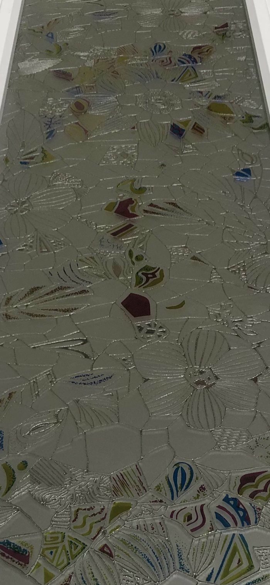
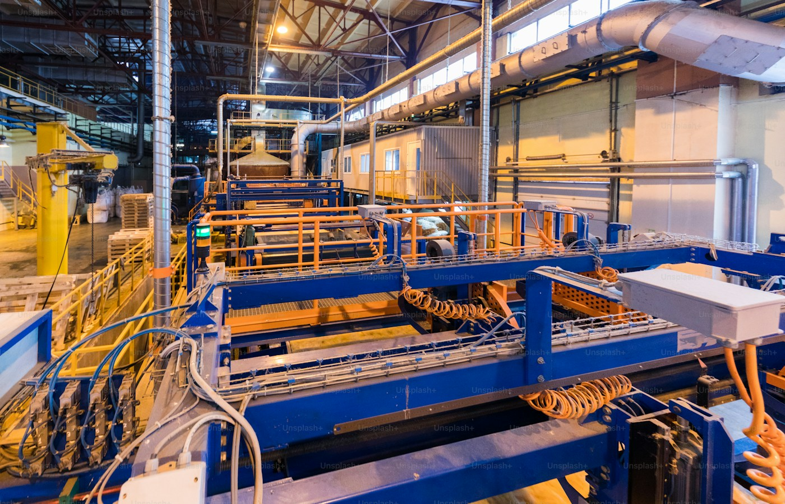
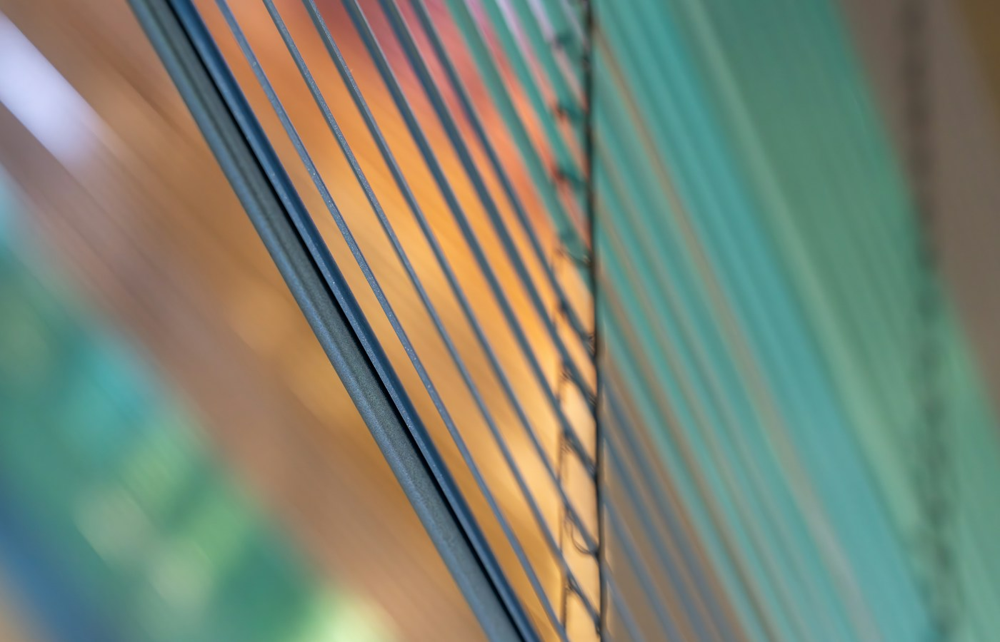
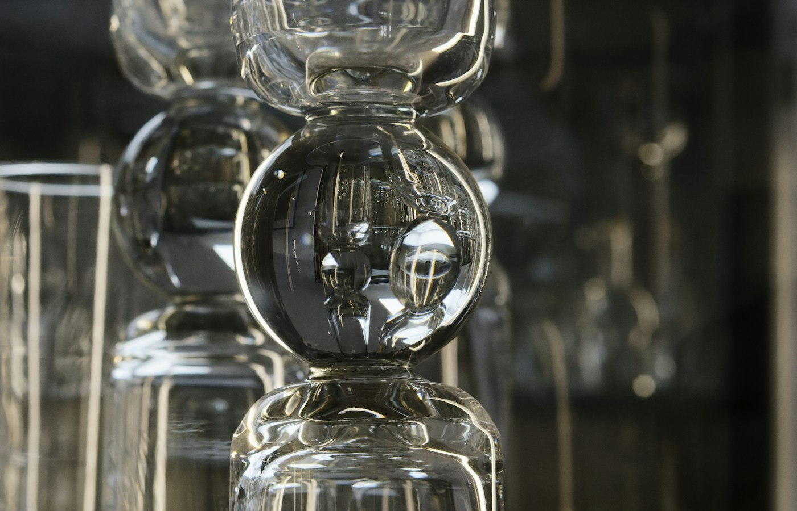
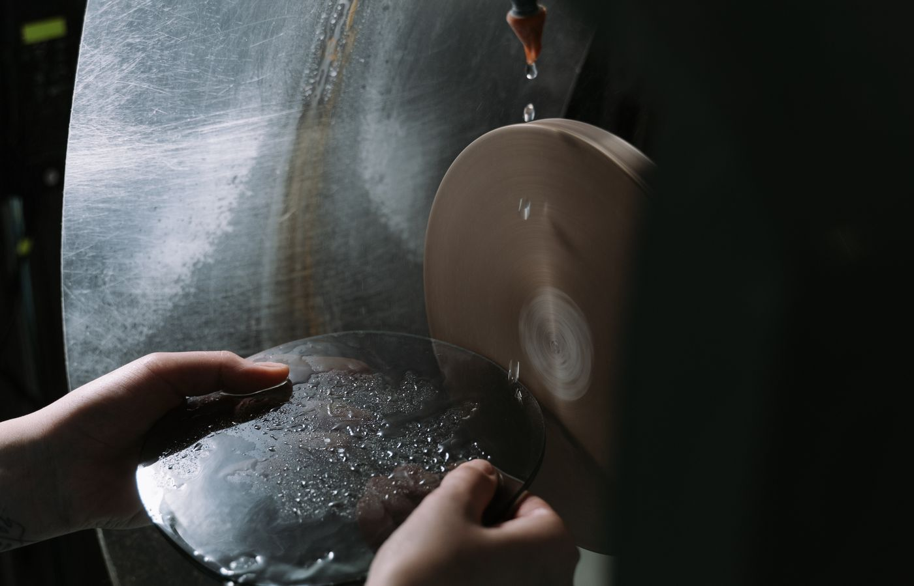
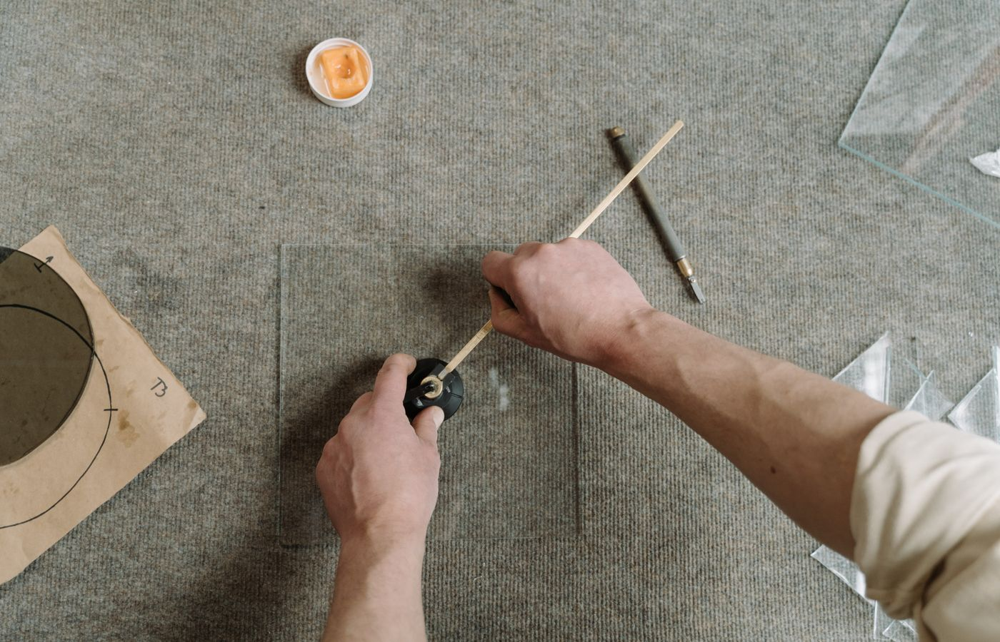
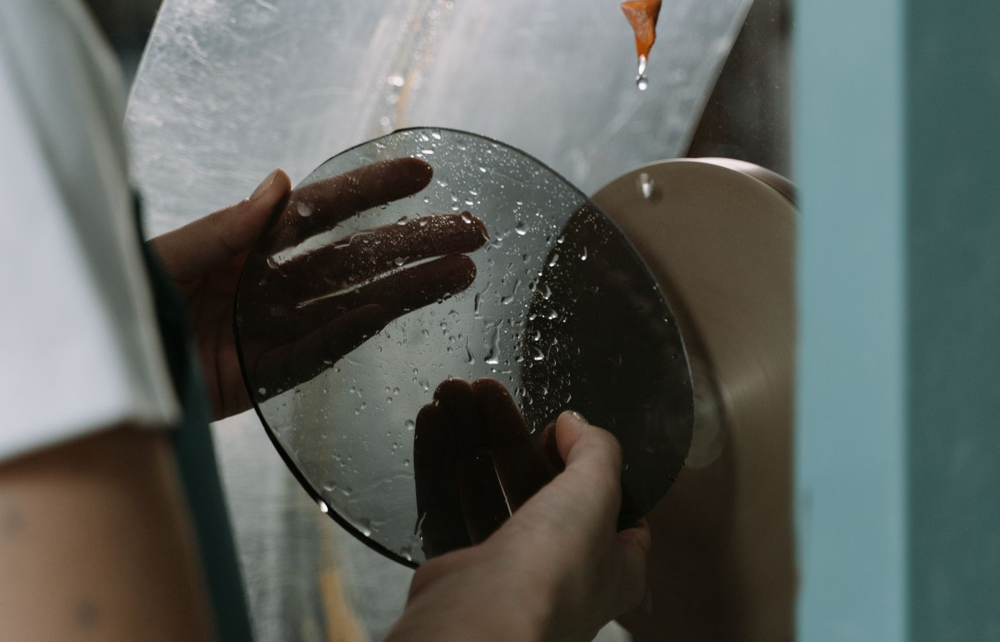

La solución más solicitada para puertas, ventanas, acristalamientos y reposiciones.
Cristalería · Villacañas · Desde 1980
Cristal con oficio.
Hecho a medida.
Soluciones en cristal para particulares, empresas y constructores. Desde una reparación urgente hasta instalaciones especiales en España y en el extranjero.
Escríbenos por WhatsApp. Si necesitas vernos, concertamos cita.
Proyectos y Desarrollos Áncora
Cristalero en Villacañas: todo tipo de trabajos en cristal
Cortamos y montamos cristal plano para puertas, ventanas, espejos, mamparas, mesas y cerramientos. Los encargos urgentes se cortan en el momento; el resto se fabrica a medida.
Mamparas, espejos, mesas de cristal y piezas especiales hechas para cada espacio.
¿Se te ha roto un cristal? Lo cambiamos: ventanas, puertas, lunas y montaje para particulares y empresas.
Templado · Ignífugo
Cristales que exigen más
Trabajamos cristal ignífugo y templado para proyectos con requisitos técnicos específicos, con una red propia de instalación.
30 / 60
Cristal resistente al fuego durante 30 minutos y, en determinados sistemas, hasta 60 minutos.
Exterior
Piezas especiales que viajan fuera de España, coordinadas con instaladores especializados.
1980

Áncora · desde 1980
Una tradición familiar que se ve en cada corte
Áncora nace en 1980, cuando Rafael Osuna abre su propio taller en Villacañas, tras años tallando cristal en Madrid. Hoy su hija está al frente de Proyectos y Desarrollos Áncora y continúa esa misma tradición.
Portfolio
Próximamente: trabajos reales
Estamos preparando una selección de mamparas, espejos, mesas, puertas y montajes especiales.

Taller de cristal
Texturas de cristal
Detalles de material
Pulido de cantos
Corte artesanal
AcabadosContacto
¿Qué cristal necesitas?
Cada trabajo es distinto. Si tienes un cristal roto o necesitas uno a medida, mándanos las medidas o una foto y te orientamos sin compromiso.
WhatsApp / Tel.643 554 180
Emailcristalesancora@gmail.com
HorarioLunes a viernes · 9:00-14:00 y 15:00-18:00
Zona de servicioVillacañas y pueblos de alrededor, Madrid y centro de España